용강중학교 · 역사 발표 자료
30초 예고편 + 3분 30초 본 발표
영상을 재생할 수 없습니다. 발표 바로 시작을 눌러 주세요.
AN ORDINARY MAN · HIS EXTRAORDINARY JOURNEY
평범한 사람, 비범한 여정
전쟁을 끝내고, 냉전을 열고,
대한민국 방어를 결정한 미국 제33대 대통령.
인물 파일
마지못해 농사를 지은 농부였고, 부하를 이끈 군인이었으며, 사업에 실패한 잡화점 주인이었다.
1945년 4월 12일, 그는 누구도 예상하지 못한 대통령이 되었다. 계획에 없던, 먼 길을 돌아온 자리였다.
그러나 이 평범한 사람이 7년 9개월 동안 내린 결정은 원자폭탄, 냉전, 한국전쟁을 거쳐 오늘의 세계에 남아 있다.
트루먼 도서관·박물관 상설전 입구 문구에서 옮김
백악관 공식 초상 · 1947 · 트루먼 도서관 소장번호 84-5
1945.04
루스벨트 서거 · 대통령 승계
1945.07
원자폭탄 사용 결정
1945.08
원폭 투하 · 일본 항복
1950.06
대한민국 방어 결정
1951.04
맥아더 해임
재임 7년 9개월
1945.07
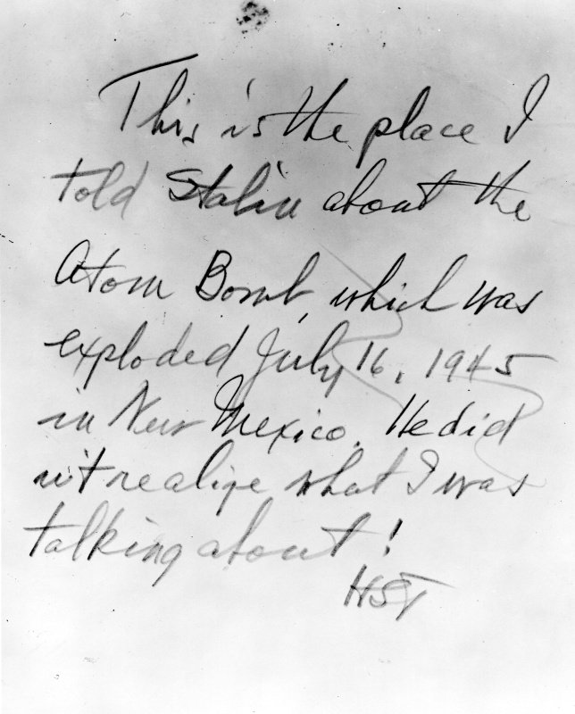
포츠담 회담 사진 뒷면 트루먼 자필 · 사진 1945. 7. 17.
원자폭탄 사용을 승인, 8월에 투하됐다.
1947.03
트루먼 독트린 연설 · 1947. 3. 12.
자유 진영 지원을 선언했다.
1950.06
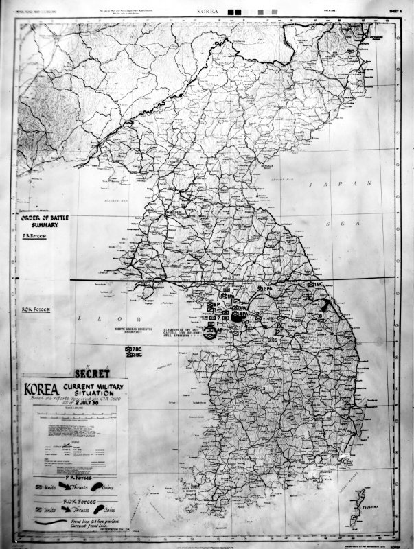
미군 한국 전황도
이틀 만에 해·공군 투입을 결정했다.
1951.04
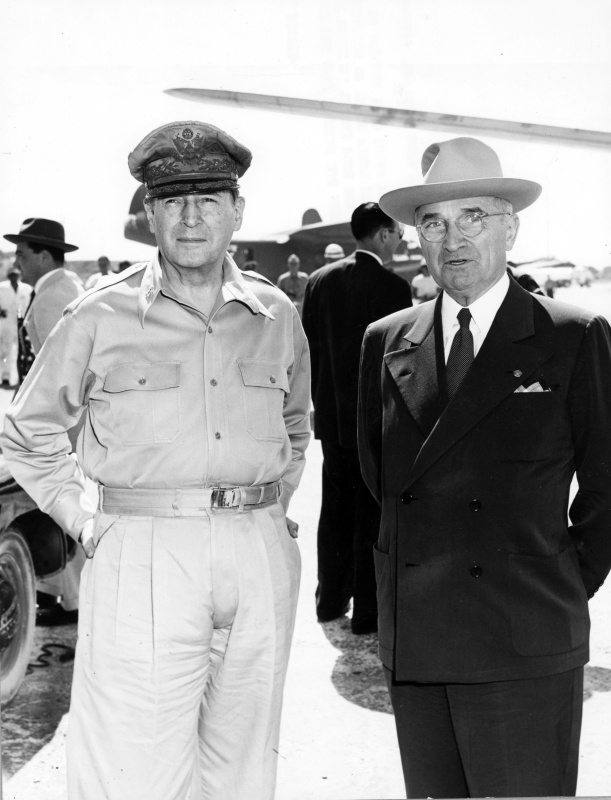
웨이크섬 회담
문민통제를 택했다.
전쟁 종결
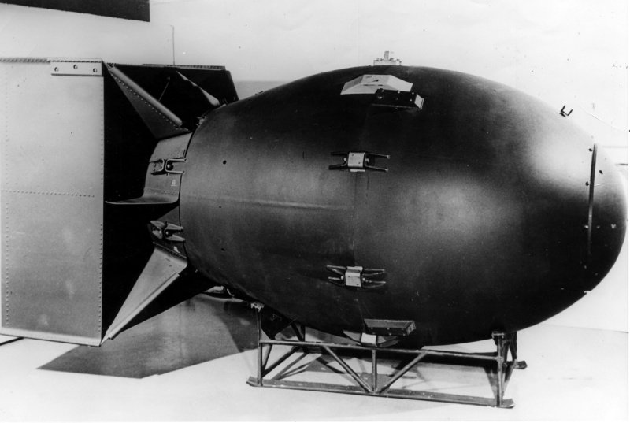
팻맨형 원자폭탄 · 나가사키에 투하된 형식
로스앨러모스 연구소
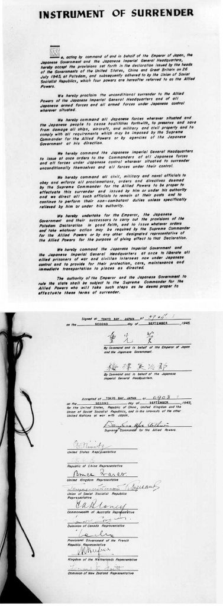
일본 항복 문서
1945년 9월 2일 · 도쿄만 미주리함에서 서명
08.06
히로시마
08.09
나가사키
08.15
일본 항복 발표
행정부의 설명
전쟁을 조기에 끝내 미군의 희생을 줄이기 위한 결정이었다.
역사적 쟁점
그러나 수십만 명의 민간인이 희생되었고,
‘정말 불가피했는가’라는 질문이 남았다.
단신
일본의 항복 배경에는 8월 8일 소련의 대일 참전도 함께 작용했다.
정식 항복 문서 서명은 9월 2일이었다.
냉전 봉쇄
1947.03 · 정치
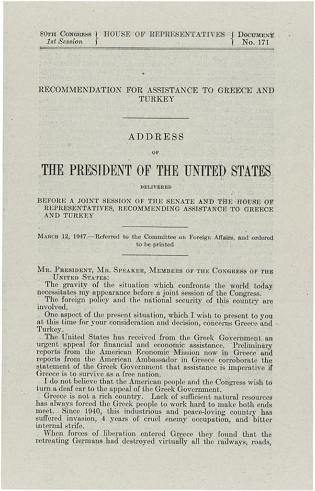
미 하원 문서 제171호 · 그리스·튀르키예 원조 요청 연설문
고립주의를 버리고 봉쇄에 나섰다.
1948.04 · 경제
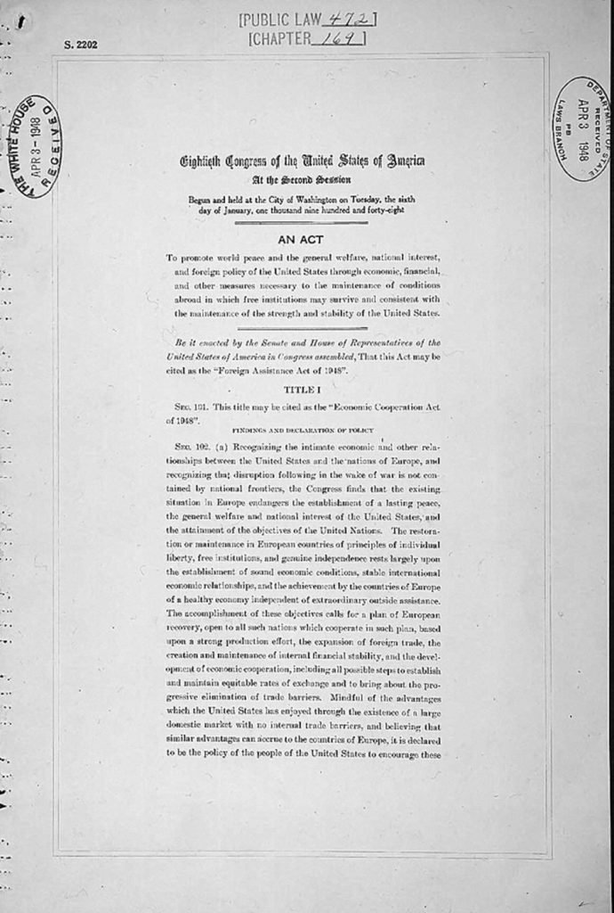
경제협조법 원문 · 공법 제472호 · 1948. 4. 3. 백악관 접수
약 130억 달러로 유럽을 되살렸다.
1949.04 · 군사
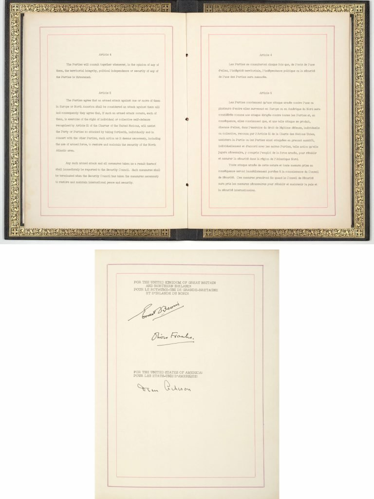
북대서양 조약 원본 · 제5조와 각국 서명면
서방 12개국이 집단방위를 약속했다.
한국전쟁
6월 25일 북한이 38선을 넘었다.
트루먼은 이틀 만에 해·공군,
닷새 만에 지상군 투입을 결정했다.
소련이 안전보장이사회에 불참해 거부권이 행사되지 않았고, 미군 중심의 유엔군이 편성됐다.
01 낙동강 전선까지 남하
02 인천상륙작전과 북진
03 중국군 개입과 교착
단신
참전 16개국이 유엔군에 병력을 보냈다. 전쟁은 3년 넘게 이어졌다. 정전협정은 트루먼 퇴임 뒤, 아이젠하워 정부 시기인 1953년 7월 27일 체결됐다.
미군 한국 전황도 · 1950. 7. 2.
남침 일주일 뒤 트루먼에게 보고된 기밀 지도
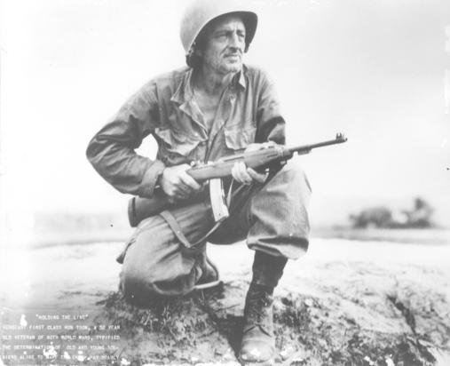
전선을 지키는 미군 병사 · 한국전쟁
두 차례 세계대전을 겪은 52세 병사
문민통제
| 쟁점 | 트루먼 · 대통령 | 맥아더 · 장군 |
|---|---|---|
| 전쟁의 목적 | 협상을 통한 질서 회복 | 완전한 군사적 승리 |
| 확전 | 전면전을 막는 제한전 | 만주 폭격 등 중국 본토로 확대 |
| 핵심 가치 | 문민통제와 국제 질서 | 군사적 승리와 조기 종결 |
결정타는 불복종이었다
정부 방침에 어긋나는 공개 발언이 이어지자 트루먼은 1951년 4월 11일 그를 해임했다.
이는 전쟁 수행의 최종 결정권이 군이 아니라 선출된 민간 정부에 있음을 확인한 결정이었다.
“군 지휘관은 법과 헌법이 정한 방식으로 내려진 정책과 지시에 따라야 한다.”트루먼 · 맥아더 해임 성명 · 1951. 4. 11.
단신
맥아더는 귀국 후 영웅 대접을 받았지만, 전쟁을 중국으로 확대하자는 그의 주장은 끝내 받아들여지지 않았다.
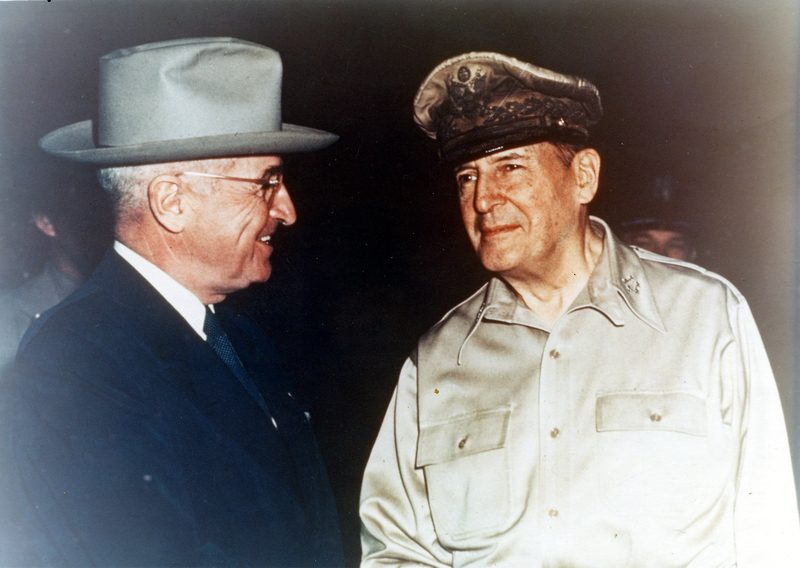
웨이크섬 회담 · 1950년 10월
해임 여섯 달 전, 두 사람의 유일한 대면
남긴 것과 그림자
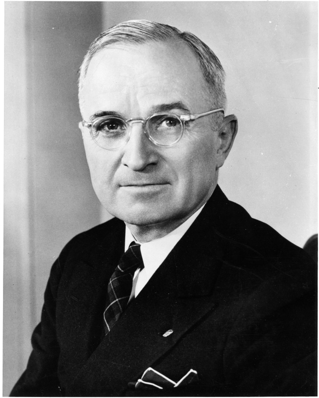
해리 트루먼 공식 초상 · 1945 · 소장번호 63-782
“대통령은 그가 누구든 결정해야 한다. 그는 책임을 누구에게도 넘길 수 없다.”
고별연설 · 1953. 1. 15. · 우리말 옮김